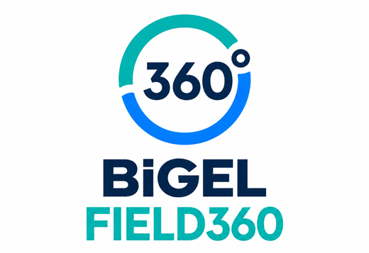

BİGEL FIELD360 — Uçtan uca saha operasyon yönetimi
Sahanın tamamı tek merkezde.
Temizlik, bakım, denetim ve saha aksiyonlarını tek sözleşme, tek operasyon standardı ve tek raporlama akışında birleştiriyoruz. Dağınık tedarikçi yapısı yerine tek muhatap.

Tek merkez. Tek standart. Tek görünüm.
01 · Tek merkez
Planlama, saha koordinasyonu ve müşteri iletişimi ortak yönetim altında yürür.
02 · Tek saha standardı
Kontrol listeleri, fotoğraf açıları, kalite kriterleri ve kapanış kuralları tüm lokasyonlarda aynıdır.
03 · Tek yönetim görünümü
Ziyaretler, skorlar, açık bulgular, iş emirleri ve kapanış kanıtları tek ekranda izlenir.
Hizmetler bağımsız başlar ya da aynı ziyaret planında birleşir.
| Hizmet | Sahadaki rol | Temel çıktı | FIELD360 içindeki yeri |
|---|---|---|---|
| CLEAN | Temizlik ve görünüm standardı | Öncesi/sonrası fotoğraf, kalite kontrolü | Planlı veya ihtiyaç bazlı uygulama |
| CARE | Küçük bakım ve fiziksel müdahale | Tespit, iş emri, uygulama, kapanış | Bulgunun sahada çözülmesi |
| AUDIT | Marka, fiziksel alan ve CX denetimi | Skor, kanıt, öncelikli bulgu listesi | Karar ve aksiyon kaynağı |
| EV Audit30 | Şarj noktası fiziksel kalite denetimi | Audit30 skoru, kritik bildirim | EV ağına özel kontrol standardı |
Dağınık saha operasyonu, ortak düzene dönüşür.
| Yaşanan durum | FIELD360 yaklaşımı | Görülen sonuç |
|---|---|---|
| Bölgeden bölgeye değişen hizmet kalitesi | Ortak SOP, kontrol listesi ve fotoğraf standardı | Lokasyonlar arası karşılaştırılabilir kalite |
| Çok sayıda tedarikçi ve iletişim kanalı | Tek sözleşme, tek operasyon merkezi, bölgesel ekip ağı | Sade koordinasyon, tek muhatap |
| Sahada ne yapıldığının görülememesi | Konum, tarih, ekip ve fotoğrafla doğrulanan ziyaret | Şeffaf, denetlenebilir hizmet |
| Bulguların açık kalması | Sorumlu, hedef tarih, öncelik ve kapanış kanıtı | İş emri bazında takip |
| Dağınık yönetim raporları | Lokasyon, bölge, hizmet ve dönem bazlı görünüm | KPI, SLA ve skorlar tek raporda |
Her görev aynı kayıt zincirinde ilerler.
Planlama
Lokasyon, kapsam, ekip, tarih ve SLA.
Görev atama
Saha ekibi, rota, ekipman ve talimat.
Saha uygulaması
CLEAN, CARE, AUDIT veya EV kapsamı.
Doğrulama
Konum, zaman, kontrol listesi, fotoğraf.
Aksiyon ve kapanış
İş emri, sonrası fotoğrafı, müşteri raporu.
Merkez ekip ne görür?
Ağ görünümü
Türkiye, bölge, şehir ve lokasyon durumu. Kaynak ve ziyaret önceliği.
Hizmet performansı
Planlanan, tamamlanan ve geciken ziyaretler. Kapasite ve SLA takibi.
Kalite skoru
Kontrol listesi sonucu ve lokasyon skoru. Düşük performanslı noktalar.
Bulgu ve iş emri
Açık kritikler, sorumlular ve hedef tarihler. Müdahale ve bütçe önceliği.
Kanıt geçmişi
Öncesi, sonrası ve kapanış fotoğrafları. Yapılan işin doğrulanması.
Örnek pilot
20–30 lokasyon, 4–6 hafta, CLEAN + CARE + AUDIT. Başlangıç skoru, açık bulgu, SLA ve ikinci ziyaret.
Saha operasyonunuzu birlikte tasarlayalım.
Pilot kapsamını seçili lokasyonlarla başlatır, sonuçlara göre bölgesel ve Türkiye geneli operasyona ölçekleriz.